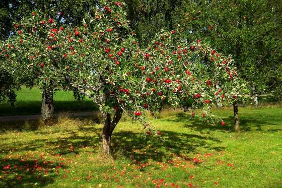
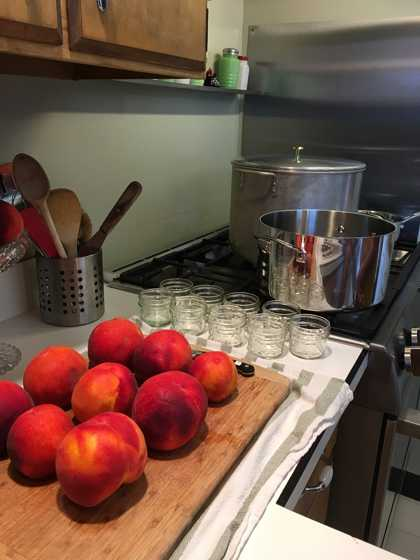
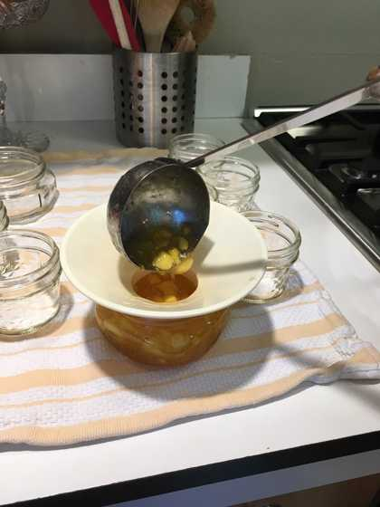
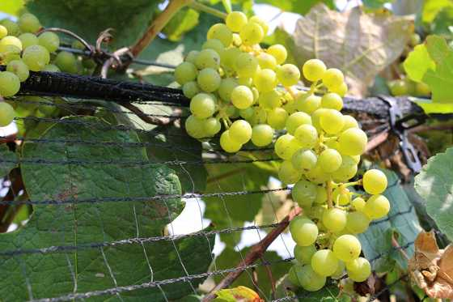
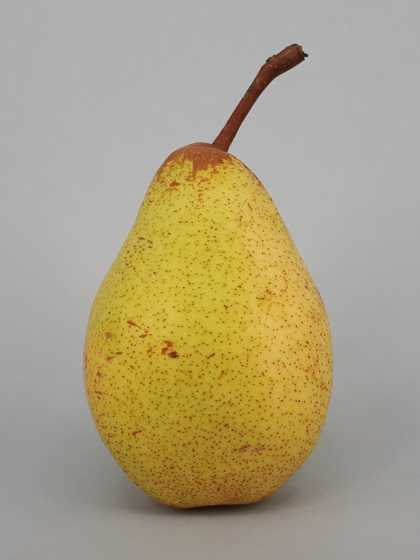
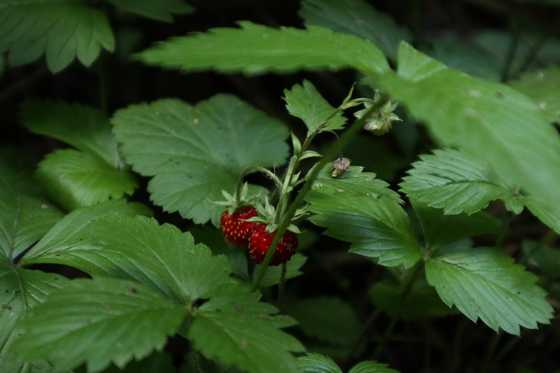
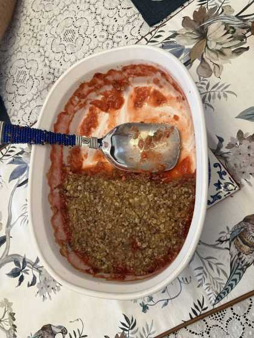
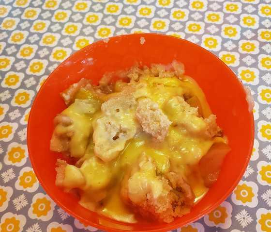

掲載写真はフリー素材のイメージです。店舗の実際の外観・内装・メニューではありません。他の地域で撮影されたものや、撮影地が不明なものを含みます。
お店の由来と想い
フルラボCafeは、横手産のくだものを使ったジャム専門店「フルラボ」(横手市四日町)を営む加藤正哉さんが、2024年8月に開いたカフェです。
コンセプトは「くだもの発信基地」。秋田県は果物が豊かで身近なぶん、何気なく食べられがちです。そのくだものの奥深い魅力や、おいしい食べ方をもっと伝えたい。生産者と消費者をつなぐ店づくりを目指していると、地元の報道で紹介されています。
横手産の旬のくだものを中心にしたメニューや、くだものの直売スペースがある、と紹介されています(内容は変わることがあります)。
店名の意味は確認できていないため、ここでは触れていません。

写真: W.carter / CC0
- 所在地: 秋田県横手市婦気大堤下久保34-3
- 電話: 準備中
- 営業時間・定休日: 準備中
- Instagram: @frulabo_cafe
メニュー
報道などで紹介されている内容を、イメージ写真とともにご案内します。価格・提供状況は準備中です。
くだものと、ジャムのイメージ

写真: Nutrition, Food Safety & Health / CC0

写真: Nutrition, Food Safety & Health / CC0

写真: Chandapiwa Malema / CC0

写真: Daderot / CC0

写真: Suzy Hazelwood / CC0

写真: Alabama Extension / CC0

写真: Fructibus / CC0

写真: MargaretAndArmand / CC0

写真: Eastmain / CC0

写真: Andy Li / CC0